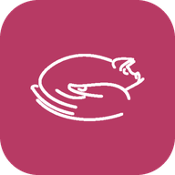

Sistema de Certificados
Núcleo de Estudos em Suinocultura
Abrir o sistemaComo deixar um atalho com a logo do NES
- iPhone (Safari): toque em Compartilhar e depois em Adicionar à Tela de Início.
- Android (Chrome): toque nos três pontinhos e depois em Instalar aplicativo ou Adicionar à tela inicial.
- Computador (Chrome ou Edge): clique no ícone de instalar na barra de endereço, ou no menu e depois em Salvar e compartilhar > Criar atalho.
Depois é só tocar no ícone do NES: ele abre direto o sistema.